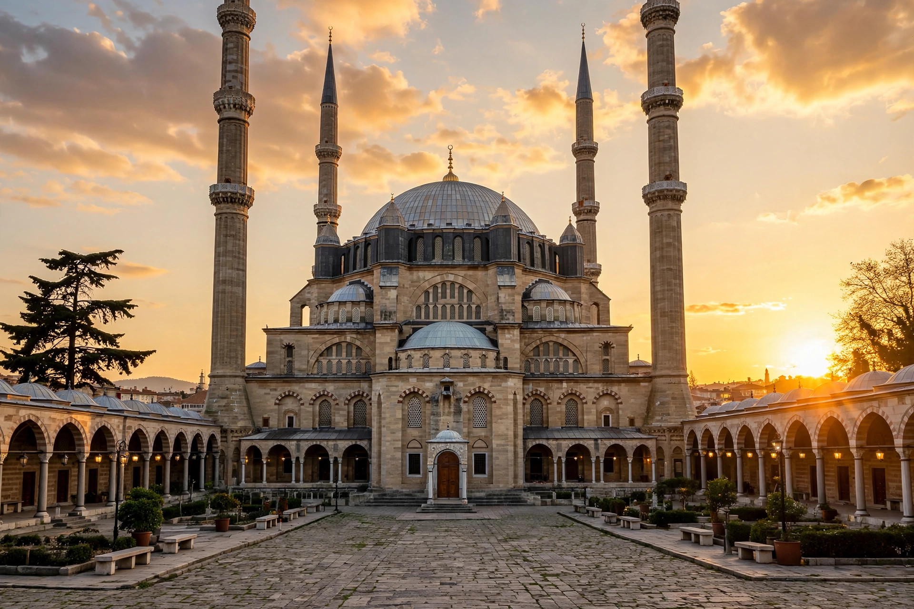

Mimar Sinan (c. 1488/1490 – 17 July 1588), also known as Koca Mi'mâr Sinân Âğâ, was the chief Ottoman royal architect and civil engineer for sultans Suleiman the Magnificent, Selim II and Murad III. During a career of some fifty years he was responsible for the construction or supervision of more than 300 major structures — mosques, palaces, aqueducts, bridges, caravanserais and baths — and is regarded as the greatest architect of the classical Ottoman period, often compared with his contemporary Michelangelo.
| Mimar Sinan | |
|---|---|
 Selimiye Mosque, Edirne — Sinan's masterpiece | |
| Born | c. 1488–1490, Ağırnas, Cappadocia |
| Died | 17 July 1588, Constantinople |
| Occupation | Chief Royal Architect (Mimarbaşı) |
| Major works | Süleymaniye Mosque; Selimiye Mosque; Şehzade Mosque; Mihrimah Sultan Mosque |
Born in the Anatolian village of Ağırnas near Kayseri, probably to a Greek or Armenian Christian family, Sinan was conscripted through the devşirme system and trained as a Janissary and military engineer. He campaigned in Europe and Persia, building bridges and fortifications — famously a bridge over the Prut in thirteen days and ships for a crossing of Lake Van. In 1538/39 he became chief royal architect. His autobiographical accounts (dictated to his friend Sâi Mustafa Çelebi) describe three masterworks as stages of mastery: the Şehzade Mosque in Istanbul as his "apprenticeship work", the Süleymaniye Mosque (1550–1557) his "journeyman work", and the Selimiye Mosque at Edirne (1568–1574) his "masterpiece", whose dome, at over 31 metres, slightly surpasses that of Hagia Sophia.
Lists of Sinan's works credit him with 92 mosques, 52 smaller mescit mosques, madrasas, mausoleums, hospitals, aqueducts (including the great Mağlova Aqueduct supplying Istanbul), bridges such as the Mehmed Paša Sokolović Bridge at Višegrad, and dozens of hammams. His architecture refined the Ottoman domed-cube mosque into serene, light-filled spaces of unmatched structural clarity. He is buried in a tomb he designed for himself beside the Süleymaniye complex.
Suleiman the Magnificent · Ottoman architecture · Hürrem Sultan (Roxelana) · Siege of Vienna (1529)